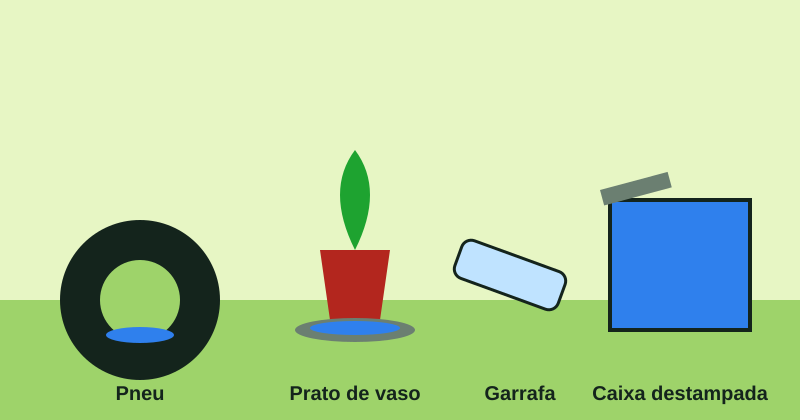

05 — Prevenção
A varredura de dez minutos
Marque o que já está resolvido na sua casa. O progresso fica salvo neste navegador: dá para continuar depois.

Repelente, manga comprida e tela na janela protegem a pele, mas não substituem a água eliminada. Receba o agente de endemias: a visita é o mapa do criadouro.
Checklist da casa
0 de 8 itens revisados (0%).
Quiz
Verdadeiro ou falso?
Responda às perguntas abaixo.